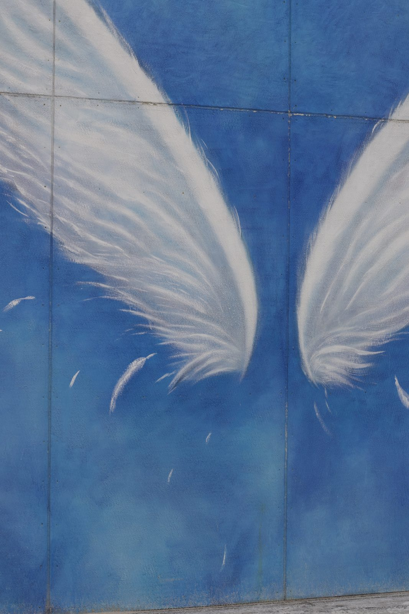
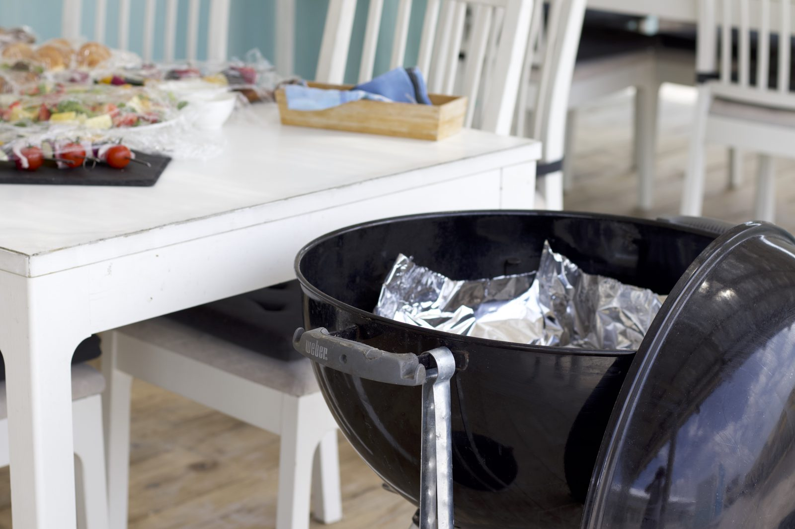
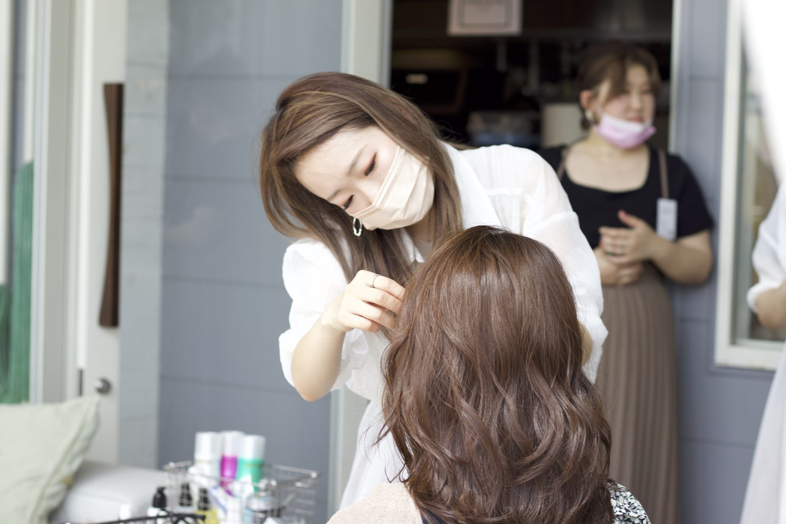
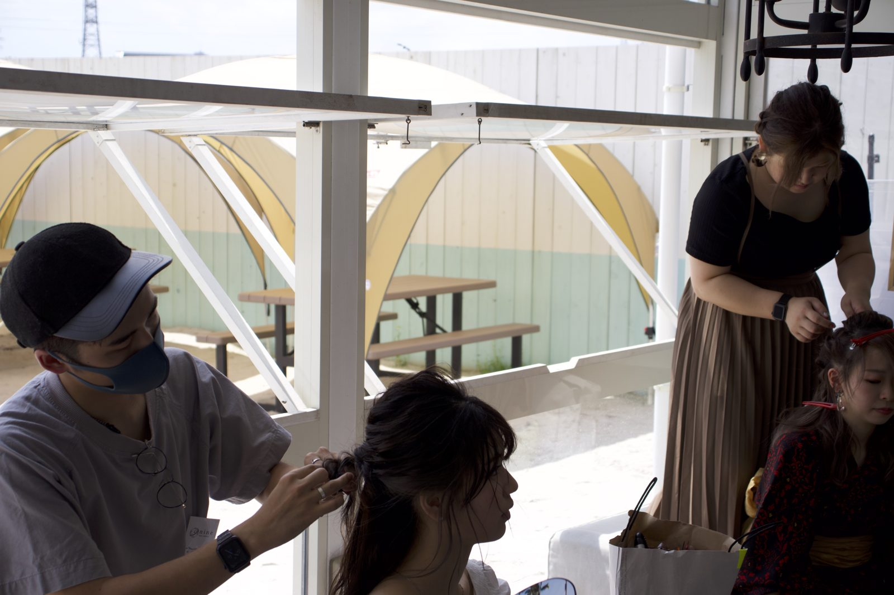

撮影会。
おはようございます。
アトリエ・ナインの菅野です。
先日、お店のみんなでモデルさんを使いながら撮影会をしてまいりました。
今回、撮影場所に協力していただいた場所は
仙台泉にある＜WILD BEACH SENDAI＞さん。
https://wildbeach.jp/sendai/
ロケーションバッチリ。
まるでビーチに来たかのような素敵な場所です。
本当、＜WILD BEACH SENDAI＞さんに感謝感謝です。
今回も仙台泉の＜Rough＞さんと共同で撮影会です。
ちなみに撮影仕込み中の写真をチラッと、、、。


こんな感じのすごく、いい感じのロケーション。
本当、nineスタッフも気合が入っています。
今回、撮影のnineメンバーは
菅野、齋藤、宮﨑、佐藤、渡邊、志賀のメンバー。
めっちゃテンション上がってました。。。。


みんな真剣ですね〜。
ちゃんとモデルさんを使った撮影は随時インスタやホームページにアップしていきますね。
＜ちなみに今回は、僕が撮影していて自分の写真はないことに今気づきました、、、、、。＞
早くコロナが治れば、もっとスタッフを楽しませることができるのになぁ〜〜〜。
それではまた。
株式会社 アトリエ・ナイン 代表 菅野
福島市で髪質改善、ヘッドスパサロンを展開しており、２０１９年１０月には待望の２店舗目をオープン。
オープンしてから３年目に法人化。オープン５年目に突入。サロンの労働環境改善のため社員の週休２日を実現。サロンワーク８時間で残業なし。スタッフに働きやす環境整備をもっとうに経営を心がけております。
何か僕に興味のある方は
LINE@:@179cnivq
までお問い合わせください。美容師さん以外でもOKですよ。
お待ちしております